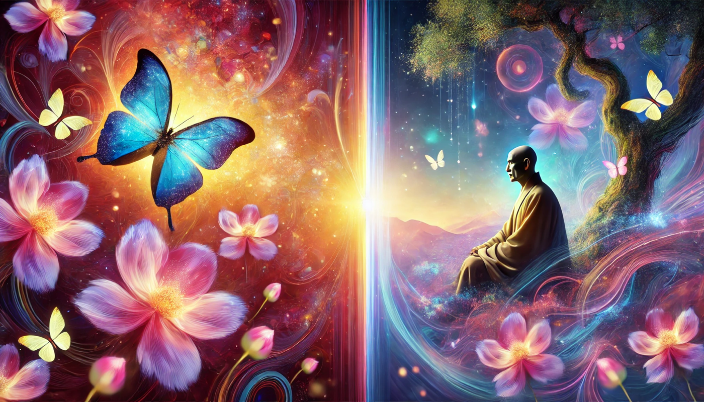

Dreams, Identity, and the Freedom to Let Go

Zhuangzi’s The Butterfly Dream invites readers to reconsider the rigid boundaries of identity, truth, and existence. In Zhuangzi’s philosophy,
distinctions between self and other, dream and reality, are human constructs that limit true understanding. Freedom, as Zhuangzi sees it, lies
in transcending these constructs and embracing the fluid, interconnected nature of existence. In the parable of The Butterfly Dream, Zhuang
Zhou’s transformation into a butterfly and back again symbolizes the impermanence of identity and the relativity of being. Zhuangzi writes,
“Am I Zhuang Zhou dreaming of being a butterfly, or a butterfly dreaming of being Zhuang Zhou?” (Zhuangzi, 47). This rhetorical question
illustrates the seamless transitions between states of being, challenging the human tendency to seek permanence or absolute truths.
Zhuangzi’s philosophy critiques the confines of fixed identities and encourages an acceptance of life’s inherent ambiguity. In today’s world,
Zhuangzi’s teachings remain a profound reminder to question the limitations we impose on ourselves and others. Freedom is not about
controlling outcomes or solidifying truths but about embracing the impermanence and unpredictability of existence. By doing so, one can find
harmony not through certainty but through openness to change (Zhuangzi, 50).